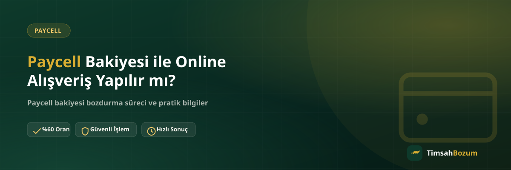

Paycell uygulamasında bir bakiye gören çoğu kullanıcı, aynı anda iki soruyu birden sorar: bu bakiyeyle internetten alışveriş yapabilir miyim, yoksa nakde çevirmek mi daha mantıklı? İkisi de geçerli bir seçenek ve hangisinin sana uyduğu, bakiyeyi nasıl kullanmayı planladığına göre değişir. Bu yazıda online kullanım ile bozum arasındaki farkı ve hangi durumda hangisinin daha pratik olduğunu anlatıyoruz.
Paycell Bakiyesi Online Alışverişte Nasıl Değerlendirilir?
Paycell, cüzdanındaki bakiyeyi ödeme aracı olarak sunan bir mobil ödeme uygulaması olduğu için, bakiyeni bu yöntemi ödeme seçeneği olarak kabul eden sitelerde kullanabilirsin. Yani kullanım imkânı doğrudan bakiyenin kendisinden değil, alışveriş yaptığın platformun Paycell'i desteklemesinden gelir. Bazı sitelerde bu seçenek varken bazılarında olmayabilir, bu yüzden "her yerde geçerli" bir kullanım beklememek gerekir.
Paycell Cüzdanından Online Ödeme Yapılır mı?
Cüzdan bakiyesi, uygulama içindeki ana bakiye olduğu için, ödeme ekranında Paycell seçeneği sunan bir mağazada bu bakiyeyi kullanabilirsin. Süreç genellikle uygulama üzerinden onay vermeni gerektirir; ödeme anında Paycell hesabına yönlendirilip işlemi oradan tamamlarsın.
Paycell Kart ile İnternetten Alışveriş Farklı mı?
Paycell Kart, cüzdana bağlı ama ayrı bir ödeme aracı olarak çalışır ve kart numarası gerektiren ödeme ekranlarında kullanılabilir. Cüzdan bakiyesiyle Paycell Kart bakiyesi aynı hesaba bağlı olsa da, hangisini kullandığını bilmek, ödeme sırasında doğru ekranı seçmeni sağlar. Bu ayrım, ileride bakiyeni bozdurmak istediğinde de işine yarar; çünkü hangi ekranda ne kadar tutar olduğunu bilmek, bozum talebinde doğru bilgiyi paylaşmanı kolaylaştırır.
Kullanmayacağın Bakiyeyi Elinde Tutmak mı, Bozdurmak mı Daha Mantıklı?
Online alışverişte kullanmayı planladığın bir bakiyeyi elinde tutman doğaldır. Ama kullanacağın bir site veya ihtiyaç yoksa, bakiyeyi uygulamada bekletmek yerine nakde çevirmek birçok kullanıcı için daha pratik bir seçenek. Paycell bakiye tabanlı bir hizmet olduğu için TimsahBozum üzerinden bakiyenin tamamını veya istediğin bir kısmını bozdurabilirsin.
Bakiyenin Bir Kısmını Kullanıp Kalanını Bozdurabilir miyim?
Evet. Paycell'de kısmi bozum mümkün olduğu için, bakiyenin bir kısmını online alışverişte kullanıp kalan tutarı ayrıca bozdurabilirsin. Bu durumda bozum talebinde bulunurken güncel kalan bakiyeni gösteren bir ekran görüntüsü paylaşman yeterli. Örneğin bir kısmını bir alışverişte kullanıp kalanını değerlendirmek istediğinde, bunu tek seferde değil, bakiyenin güncel durumuna göre ayrı bir talep olarak iletebilirsin.
Online Alışverişte Kullanılmış Bir Bakiye Bozdurulabilir mi?
Daha önce kısmen kullanılmış bir Paycell bakiyesinde sorun yok; önemli olan, bozum talebinde bulunduğun anda uygulamada görünen güncel tutar. Geçmişte ne şekilde kullanıldığının bozum süreciyle bir ilgisi yok, tek ihtiyaç güncel ekran görüntüsü.
Paycell Bakiyesi Bozdurma Süreci Nasıl İşler?
Online alışveriş deneyiminden farklı olarak bozum süreci tamamen WhatsApp üzerinden yürür. Resmi hattımız olan +90 543 887 21 71'e yazıp güncel bakiyeni gösteren bir ekran görüntüsü paylaşman, ardından oranı teyit edip onay vermen yeterli. Üyelik, form doldurma veya kimlik belgesi istenmez; hesabına erişim de verilmez.
Hangi Durumda Online Kullanım, Hangi Durumda Bozum Daha Mantıklı?
Belirli bir sitede alışveriş yapmayı planlıyorsan ve o site Paycell'i kabul ediyorsa, bakiyeyi doğrudan kullanmak ekstra bir adım gerektirmez. Ama elindeki bakiyeyi kullanacağın net bir plan yoksa, uygulamada atıl şekilde bekletmek yerine bozdurup nakde çevirmek, tutarı başka bir ihtiyaç için kullanmanı sağlar.
Bozum İçin Online Alışveriş Geçmişimi Paylaşmam Gerekir mi?
Hayır. Bozum talebinde geçmiş işlemlerin veya alışveriş detaylarının bilinmesine gerek yok. Tek istenen, bozdurmak istediğin güncel bakiyeyi net şekilde gösteren bir ekran görüntüsü; bu ekranın öncesinde ne yapıldığı sürecin bir parçası değil.
SMS Doğrulama Kodu veya Hesap Erişimi İstenir mi?
Hem online alışverişte hem de bozum sürecinde hesabına veya uygulamana erişim verilmesi gerekmez; bozum tarafında ayrıca SMS doğrulama kodu da asla istenmez. Böyle bir talep gelirse bunun resmi hattımızla ilgisi olmadığını bilmen, olası bir dolandırıcılık girişimine karşı en basit korumandır. Tüm işlemler yalnızca resmi WhatsApp numaramız üzerinden yürür, çalışma saatlerimiz her gün 10:00-03:00 arasıdır.
Kararsız Kalanlar İçin Pratik Bir Yol Haritası
Bakiyenin ne olacağına karar veremeyenler için en pratik yöntem, önce yakın zamanda kullanacağın somut bir alışveriş planı olup olmadığına bakmak. Elinde net bir plan varsa bakiyeyi uygulamada tutmanın bir maliyeti yok; plan yoksa veya belirsizse, bakiyeyi aylarca beklemek yerine değerlendirmek genelde daha pratik bir seçim oluyor.
Online Alışveriş Planın Netse Bakiyeyi Kullan
Belirli bir siteden, bu siteyi yakın zamanda kullanacağını bildiğin ve Paycell'i ödeme seçeneği olarak sunduğunu gördüğün bir durumdaysan, bakiyeyi doğrudan o alışverişte kullanmak en basit yol. Bu durumda bozum gibi ek bir adıma gerek kalmaz, bakiye zaten amacına uygun şekilde değerlendirilmiş olur.
Planın Yoksa veya Değiştiyse Bozdurmayı Değerlendir
Daha önce belirli bir alışveriş için ayırdığın ama artık o plandan vazgeçtiğin bir bakiye varsa, bunu uygulamada atıl şekilde bırakmak yerine bozdurmak mantıklı bir seçenek. Aynı şekilde, Paycell'i kabul eden bir site bulamadığın ya da bakiyeyi farklı bir ihtiyaç için nakde çevirmek istediğin durumlarda da bozum, bakiyeyi değerlendirmenin en doğrudan yolu.
Bakiyeni online alışverişte mi kullanacağına yoksa bozdurmaya mı karar verdiysen, güncel ekran görüntünle WhatsApp hattımıza yazabilirsin. Güncel oranı ve süreci daha ayrıntılı görmek istersen Paycell bozdurma sayfamıza da göz atabilirsin.
İlgili Yazılar
- Paycell Kart Bakiyesi ile Cüzdan Bakiyesi Aynı mı?
- Paycell Bakiyesini Kısmi Bozdurmanın Avantajları
- Paycell Bakiyesi Bozdurmanın Güvenli Yolu